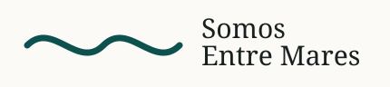

Datos de contacto
Telefono: 643 614 218
WhatsApp: 601 466 029
Email: info@somosentremares.com
Direccion: Saiz de Carlos 33, Peniscola, Castellon, Espana

Contacto
Estamos en Saiz de Carlos 33, Peniscola, Castellon, Espana. Puedes llamar al 643 614 218, escribir por WhatsApp al 601 466 029 o enviar un correo a info@somosentremares.com.

Telefono: 643 614 218
WhatsApp: 601 466 029
Email: info@somosentremares.com
Direccion: Saiz de Carlos 33, Peniscola, Castellon, Espana
Si buscas una talla concreta, un modelo de camiseta, una sudadera o un accesorio para regalar, lo mas practico es escribir antes por WhatsApp. Asi puedes confirmar disponibilidad y evitar desplazamientos innecesarios en dias de mucha afluencia.
La tienda esta pensada para comprar con calma. Puedes revisar las categorias en la web, guardar las ideas que te interesen y venir con una orientacion clara. Si necesitas ayuda, explica para que plan buscas la prenda: paseo, viaje, regalo, playa o uso diario.